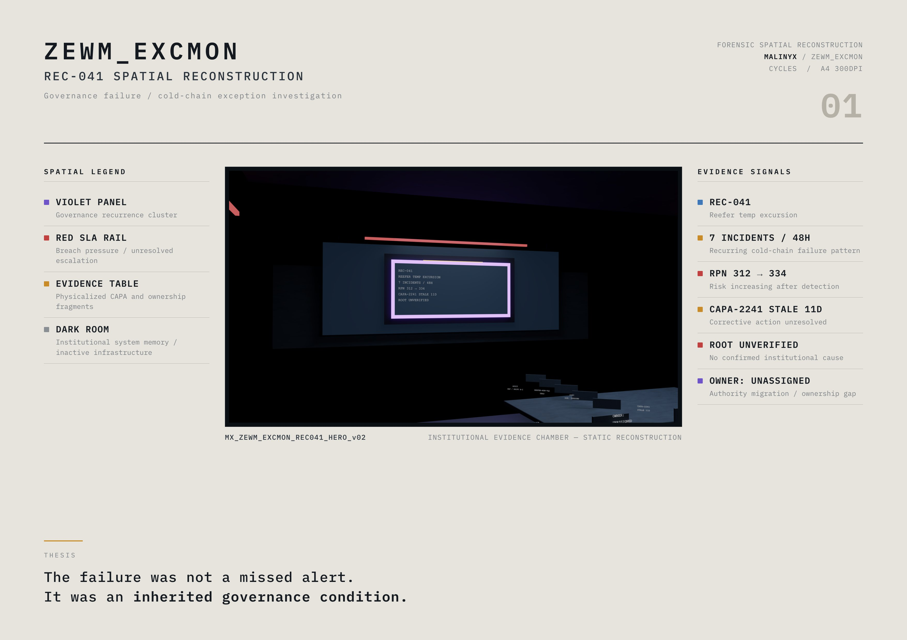
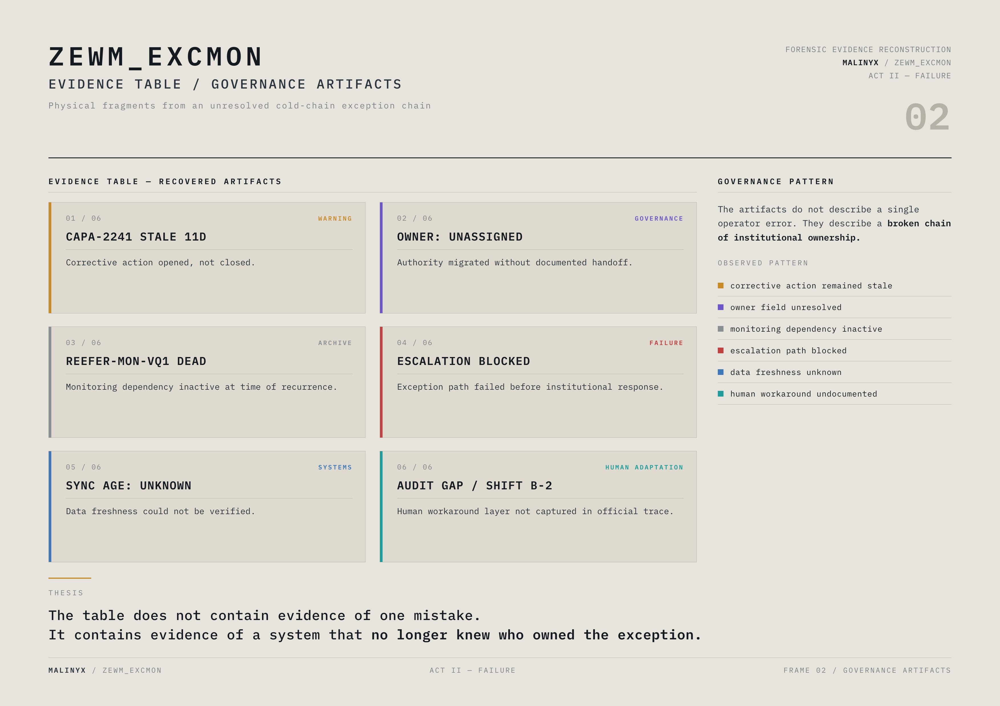
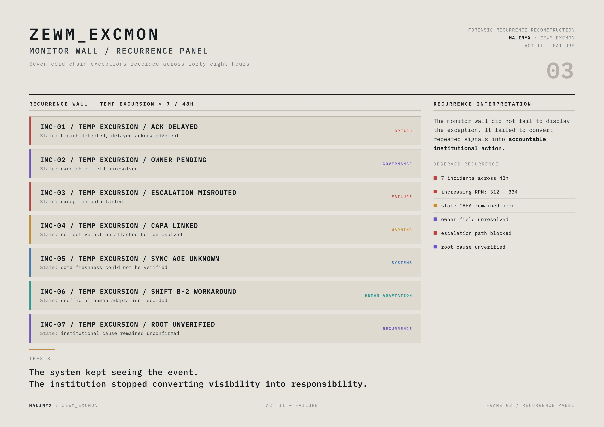
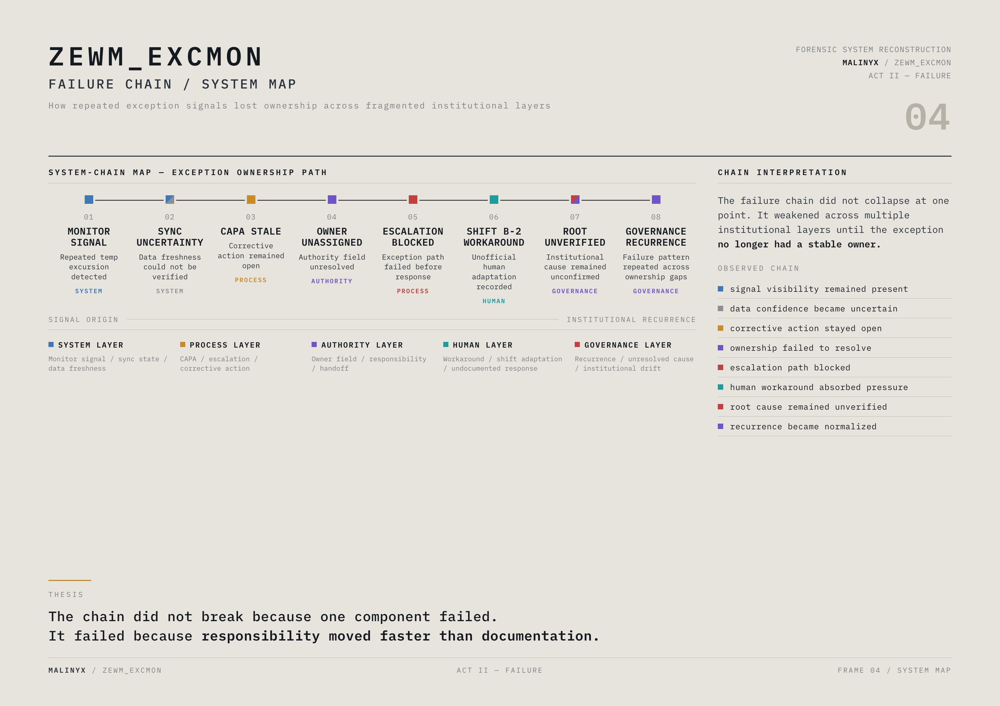
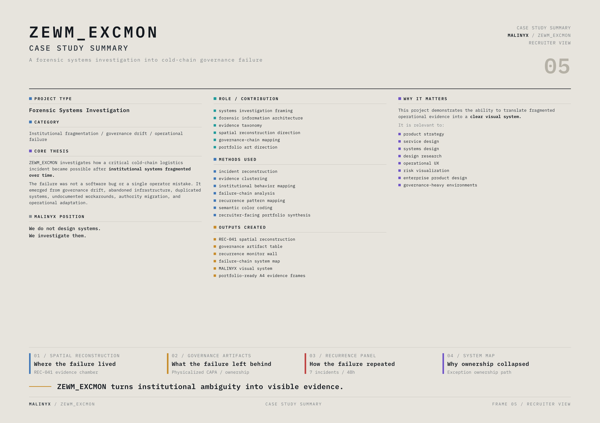
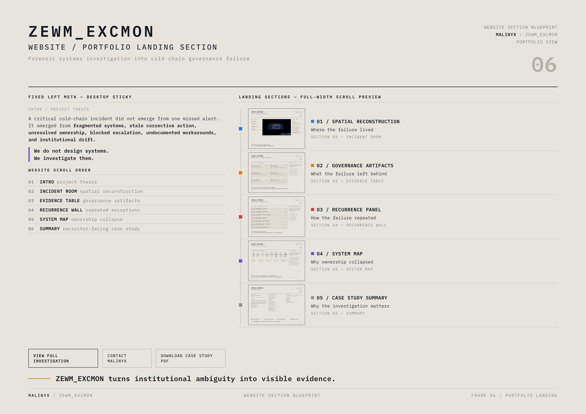

01 / Spatial Reconstruction
Where the failure lived
A generated institutional evidence room locating the incident in space, hierarchy, and inactive infrastructure.
A forensic systems investigation reconstructing how a cold-chain logistics failure emerged from fragmented governance, unresolved ownership, stale corrective action, blocked escalation, undocumented workarounds, and institutional drift.
It was an inherited governance condition.
Governance drift, abandoned infrastructure, duplicated systems, undocumented workarounds, authority migration, and operational adaptation.
We do not design systems. We investigate them.

A generated institutional evidence room locating the incident in space, hierarchy, and inactive infrastructure.

Recovered artifact cards showing stale CAPA, owner gaps, dead monitoring, and blocked escalation.

Seven recorded temperature exceptions across forty-eight hours without stable institutional ownership.

A failure chain mapping signal visibility, sync uncertainty, CAPA staleness, authority gaps, and recurrence.

A recruiter-facing summary connecting the investigation to systems design, research, and governance-heavy product work.

A web-section blueprint for presenting the investigation as a navigable case-study sequence.
ZEWM_EXCMON turns institutional ambiguity into visible evidence.